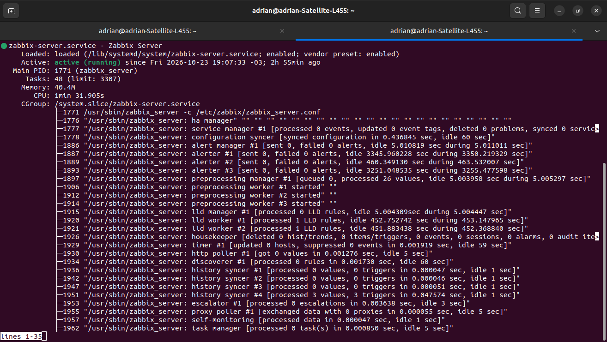

Instalación del servidor Zabbix¶
1. Instalación de Zabbix¶
1.1. Actualización de los paquetes¶
Antes de instalar Zabbix, actualizamos la lista de paquetes disponibles en los repositorios configurados en Ubuntu.
sudo apt-get update
Explicación:
sudo: ejecuta el comando con privilegios de administrador.apt-get: administra los paquetes del sistema.update: actualiza el índice de paquetes disponibles, sin instalar actualizaciones por sí mismo.
1.2. Instalación de los módulos de PHP¶
Instalamos los módulos de PHP necesarios para que la interfaz web de Zabbix pueda realizar determinadas operaciones.
sudo apt-get install php7.0-xml php7.0-bcmath php7.0-mbstring
Explicación de los módulos:
php7.0-xml: permite procesar datos y estructuras XML.php7.0-bcmath: proporciona operaciones matemáticas de precisión arbitraria.php7.0-mbstring: permite trabajar con cadenas de texto multibyte, útiles para distintos idiomas y caracteres.
La versión de PHP debe ser compatible con la versión de Zabbix y con el sistema operativo utilizado.
1.3. Descarga e instalación del repositorio de Zabbix¶
Descargamos el paquete que agrega el repositorio de Zabbix 3.2 a Ubuntu 16.04.
wget http://repo.zabbix.com/zabbix/3.2/ubuntu/pool/main/z/zabbix-release/zabbix-release_3.2-1+xenial_all.deb
Explicación:
wget: descarga archivos desde una dirección web.- La URL indica la ubicación del paquete de configuración del repositorio.
- El archivo descargado termina en
.deb, formato de paquetes utilizado por Debian y Ubuntu.
Instalamos el paquete descargado:
sudo dpkg -i zabbix-release_3.2-1+xenial_all.deb
dpkg: instala y administra paquetes.deb.-i: indica que se debe instalar el paquete especificado.
Este paso configura el repositorio desde el cual se obtendrán los paquetes de Zabbix.
1.4. Actualización de los repositorios¶
Actualizamos nuevamente el índice de paquetes para incluir el repositorio de Zabbix que acabamos de agregar.
sudo apt-get update
1.5. Instalación del servidor y la interfaz web¶
Instalamos el servidor Zabbix y su interfaz web con soporte para MySQL.
sudo apt-get install zabbix-server-mysql zabbix-frontend-php
Explicación:
zabbix-server-mysql: instala el servicio central de Zabbix con soporte para bases de datos MySQL.zabbix-frontend-php: instala los componentes de la interfaz web basada en PHP.
El servidor procesa los datos recibidos de los agentes y realiza las tareas de monitoreo. La interfaz web permite administrar hosts, métricas, triggers y alertas.
1.6. Instalación del agente local¶
Instalamos el agente de Zabbix en el mismo servidor para poder monitorear su propio estado y rendimiento.
sudo apt-get install zabbix-agent
El agente permite recopilar información del equipo, como utilización de CPU, memoria, discos y otros parámetros disponibles. Para que funcione, debe configurarse y comunicarse correctamente con el servidor Zabbix.
2. Configuración de la base de datos MySQL¶
Zabbix necesita una base de datos para almacenar la configuración de monitoreo, los hosts registrados, los elementos de datos y el historial recopilado.
2.1. Acceso a MySQL¶
Ingresamos al cliente de MySQL con el usuario administrador root.
mysql -uroot -p
Explicación:
mysql: abre el cliente de línea de comandos de MySQL.-u root: especifica el usuario con el que se iniciará sesión.-p: solicita la contraseña de ese usuario.
2.2. Creación de la base de datos¶
Dentro del cliente de MySQL, creamos la base de datos zabbix con codificación UTF-8 y ordenamiento binario.
CREATE DATABASE zabbix CHARACTER SET utf8 COLLATE utf8_bin;
Explicación:
CREATE DATABASE zabbix: crea una base de datos llamadazabbix.CHARACTER SET utf8: define la codificación de caracteres.COLLATE utf8_bin: establece una comparación binaria de los valores de texto.
Nota: esta instrucción corresponde al esquema antiguo. Las versiones modernas de Zabbix pueden requerir otra codificación y configuración de base de datos.
2.3. Creación del usuario y asignación de permisos¶
Creamos el usuario de base de datos que utilizará Zabbix y le otorgamos permisos sobre su propia base.
GRANT ALL PRIVILEGES ON zabbix.* TO 'zabbix'@'localhost' IDENTIFIED BY 'your_password';
Explicación:
GRANT ALL PRIVILEGES: concede los permisos indicados.zabbix.*: limita los permisos a todos los objetos de la basezabbix.'zabbix'@'localhost': identifica al usuario que se conecta desde el propio servidor.IDENTIFIED BY: establece la contraseña en las versiones antiguas de MySQL que admiten esta sintaxis.
Reemplazá your_password por una contraseña segura. No publiques contraseñas reales en la documentación.
Importante: en versiones modernas de MySQL, la creación del usuario y la asignación de permisos pueden requerir instrucciones separadas.
2.4. Aplicación de los permisos¶
FLUSH PRIVILEGES;
Este comando solicita a MySQL que vuelva a cargar las tablas de privilegios. En versiones actuales, los cambios realizados mediante GRANT normalmente se aplican inmediatamente.
2.5. Salida del cliente MySQL¶
QUIT;
Cierra la sesión del cliente y regresa a la terminal del sistema operativo.
2.6. Importación del esquema inicial¶
Importamos las tablas iniciales proporcionadas por el paquete de Zabbix.
zcat /usr/share/doc/zabbix-server-mysql/create.sql.gz | mysql -uzabbix -p zabbix
Explicación:
zcat: descomprime y muestra el contenido de un archivo.gzsin guardar una copia descomprimida./usr/share/doc/zabbix-server-mysql/create.sql.gz: archivo comprimido que contiene las instrucciones SQL del esquema inicial.|: envía la salida del primer comando como entrada del segundo.mysql -uzabbix -p zabbix: se conecta a la base de datoszabbixutilizando el usuariozabbixy solicita su contraseña.
Este proceso crea las tablas que Zabbix necesita para funcionar. El esquema debe corresponder a la versión instalada.
2.7. Configuración de la contraseña en Zabbix¶
Abrimos el archivo de configuración del servidor:
sudo nano /etc/zabbix/zabbix_server.conf
Buscamos la opción DBPassword y configuramos la contraseña del usuario de base de datos:
DBPassword=your_password
Explicación:
sudo: permite editar el archivo con privilegios de administrador.nano: abre el editor de texto en la terminal./etc/zabbix/zabbix_server.conf: contiene parámetros del servicio Zabbix Server.DBPassword: indica la contraseña utilizada para conectarse a la base de datos.
La contraseña debe coincidir con la configurada para el usuario de MySQL. Si no se utiliza contraseña, esta opción se deja comentada, según la configuración admitida por la versión instalada.
En Nano, guardamos con Ctrl + O, confirmamos con Enter y salimos con Ctrl + X.
3. Configuración de PHP y Apache¶
La interfaz web de Zabbix utiliza PHP. Por ello, algunos parámetros de ejecución deben adaptarse a los requisitos de la versión instalada.
3.1. Edición de la configuración de Apache¶
Abrimos el archivo de configuración proporcionado por el paquete:
sudo vim /etc/zabbix/apache.conf
Configuracion para bloque PHP 7:
<IfModule mod_php7.c>
php_value max_execution_time 300
php_value memory_limit 128M
php_value post_max_size 16M
php_value upload_max_filesize 2M
php_value max_input_time 300
php_value always_populate_raw_post_data -1
# php_value date.timezone Europe/Riga
</IfModule>
Explicación de los parámetros:
IfModule mod_php7.c: aplica las directivas cuando el módulo correspondiente de PHP está cargado en Apache.max_execution_time 300: establece un máximo de 300 segundos para la ejecución de un script PHP.memory_limit 128M: limita a 128 MB la memoria que puede utilizar un script.post_max_size 16M: limita el tamaño máximo de los datos recibidos mediante solicitudes POST.upload_max_filesize 2M: limita el tamaño de los archivos que pueden subirse mediante PHP.max_input_time 300: establece el tiempo máximo destinado al análisis de los datos de entrada.always_populate_raw_post_data -1: es una directiva heredada de versiones antiguas de PHP.date.timezone: permite especificar la zona horaria utilizada por PHP cuando se configura en este archivo.
Importante: este bloque corresponde a una configuración antigua. Algunas directivas ya no existen en versiones modernas de PHP, y el archivo puede variar según el método de integración de PHP con Apache.
3.2. Configuración de la zona horaria¶
La línea de zona horaria del ejemplo está comentada porque comienza con #.
En una instalación compatible, se puede habilitar y reemplazar Europe/Riga por la zona correspondiente. Por ejemplo, para Mendoza, Argentina, se utiliza:
php_value date.timezone America/Argentina/Mendoza
La directiva debe colocarse en un archivo y contexto compatibles con la versión de PHP instalada. En sistemas modernos, la zona horaria puede configurarse en php.ini o en la configuración específica de PHP para Apache.
3.3. Reinicio de Apache¶
Después de realizar cambios en una configuración compatible, reiniciamos Apache para que los aplique.
sudo systemctl restart apache2
systemctl: administra servicios mediante systemd.restart: detiene y vuelve a iniciar el servicio.apache2: nombre del servicio web en Ubuntu y Debian.
Si Apache no inicia, debemos revisar sus registros y comprobar la sintaxis de la configuración.
4. Inicio y verificación del servidor Zabbix¶
4.1. Inicio del servicio¶
Iniciamos el servidor Zabbix:
sudo systemctl start zabbix-server
El comando solicita a systemd que inicie el servicio. No garantiza por sí solo que el servidor haya completado correctamente su inicialización.
4.2. Comprobación del estado¶
Consultamos el estado del servicio:
sudo systemctl status zabbix-server

El resultado esperado incluye una línea similar a:
Active: active (running)
Esto indica que systemd considera que el servicio está activo y ejecutándose.
Si aparece failed, inactive u otro estado inesperado, se deben revisar los registros y la configuración de conexión a la base de datos.
4.3. Habilitación del inicio automático¶
Finalmente, habilitamos el inicio automático de Zabbix Server al arrancar el sistema:
sudo systemctl enable zabbix-server
enable: configura el servicio para que se inicie automáticamente durante el arranque.- No inicia el servicio inmediatamente por sí solo; esa acción se realiza con
start.
De esta manera, Zabbix Server queda configurado para arrancar automáticamente en los próximos inicios del sistema.
5. Resumen del procedimiento¶
- Actualizar los índices de paquetes.
- Instalar los módulos de PHP necesarios.
- Agregar el repositorio correspondiente a la versión de Zabbix.
- Instalar el servidor, la interfaz web y el agente.
- Crear la base de datos y el usuario de MySQL.
- Importar el esquema inicial.
- Configurar las credenciales de base de datos en
zabbix_server.conf. - Revisar la configuración de PHP y Apache.
- Iniciar y verificar el servicio Zabbix Server.
- Habilitar el inicio automático del servicio.